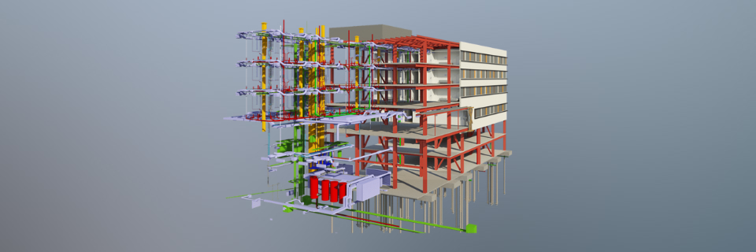
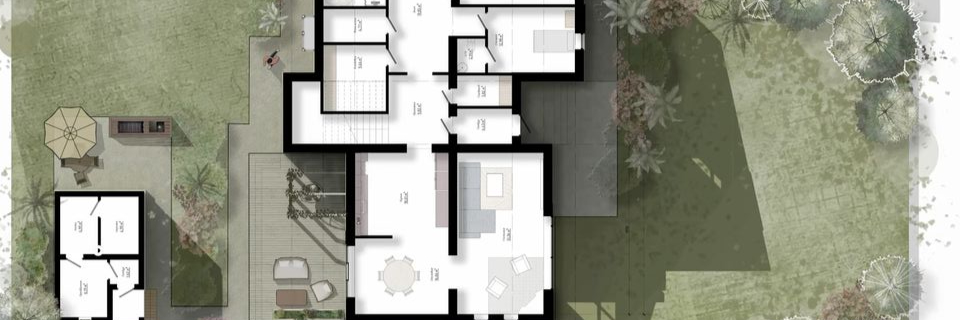

O que é BIM?

BIM é uma sigla para Building Information Modeling (Modelagem da Informação da Construção).
Pense no BIM como a evolução digital da tradicional "planta de obra". Antigamente, você tinha vários desenhos em papel: um para a arquitetura, outro para a estrutura, outro para a parte elétrica, etc. O problema é que eles nem sempre batiam uns com os outros.
O BIM resolve isso criando um único "modelo virtual" da construção, em 3D, que funciona como um "gêmeo digital" da sua obra.
Como o BIM ajuda na prática?
Tudo em um só lugar: O modelo virtual contém todas as informações de todas as áreas (arquitetura, estrutura, elétrica, hidráulica, custos, prazos).
Detecção de problemas antes da obra: É como montar a obra no computador primeiro. Se o encanamento passar exatamente onde tem uma viga, o computador avisa antes de você quebrar a parede na vida real.
Não no orçamento: O sistema consegue contar exatamente quantos tijolos, metros de fio ou sacos de cimento serão necessários, evitando desperdício e surpresas no custo.
Melhora comunicação: Todos os envolvidos (engenheiros, arquitetos, mestres de obra) usam o mesmo modelo atualizado, o que reduz erros de comunicação.
Em resumo: BIM é uma forma mais inteligente, eficiente e econômica de projetar e construir, usando a tecnologia para prever problemas e garantir que a obra saia como planejado.
Serviços

Da Ideia ao Canteiro: Zero Conflitos.
Na huss.arq, convertemos sua visão de arquitetura (em DWG ou SketchUp) em um Projeto Executivo BIM inteligente e 100% compatibilizado no Revit. Eliminamos a incerteza do processo construtivo, garantindo que o que está no projeto é fielmente executável na obra. Nosso foco é a previsibilidade, a economia e a qualidade da entrega final.
O que garantimos com a Metodologia BIM:
-
Modelagem Construtiva BIM (LOD 350+): Transformação do seu conceito em uma maquete digital rica em dados. Inclui todos os detalhes civis: Paginação de Piso, Forro, Pintura, Rodapé e Especificações Técnicas para que sua obra não pare por falta de informação.
-
Compatibilização Interdisciplinar (Clash Detection): A coordenação que elimina surpresas. Identificamos e resolvemos proativamente todos os conflitos entre Arquitetura e Engenharia (Estrutura, Hidráulica, Elétrica, HVAC), antes que se tornem custos e atrasos no canteiro.
-
Documentação Executiva de Precisão: Entregamos pranchas e cortes técnicos extraídos diretamente do modelo BIM, garantindo a coerência total entre a documentação e a realidade 3D.
-
Quantificação de Materiais (Orçamento Preciso): Extração automatizada e precisa de quantitativos (paredes, pisos, revestimentos, pintura, etc.), permitindo orçamentos mais assertivos e redução de desperdícios na compra e gestão de insumos.
Reduza seus custos, elimine o retrabalho e entregue projetos com a máxima qualidade e segurança. Converse com a huss.arq e descubra o poder do BIM na execução dos seus projetos.
Sobre nós
Meu nome é Marcos Huss e sou o fundador da huss.arq. Minha jornada na Arquitetura e Urbanismo começou oficialmente em 2019, mas a relação com a Modelagem da Informação da Construção (BIM) é muito mais antiga.
Desde 2017, quando o BIM ainda era visto como uma tendência distante no Brasil, mergulhei nesta metodologia. São mais de 8 anos dedicados integralmente a transformar dados 2D em modelos executivos 3D inteligentes e, o mais importante, livres de retrabalhos na obra.
Contato